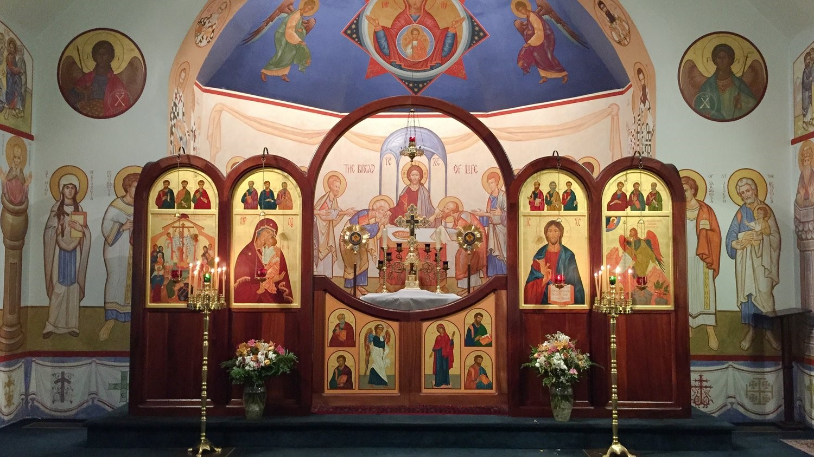
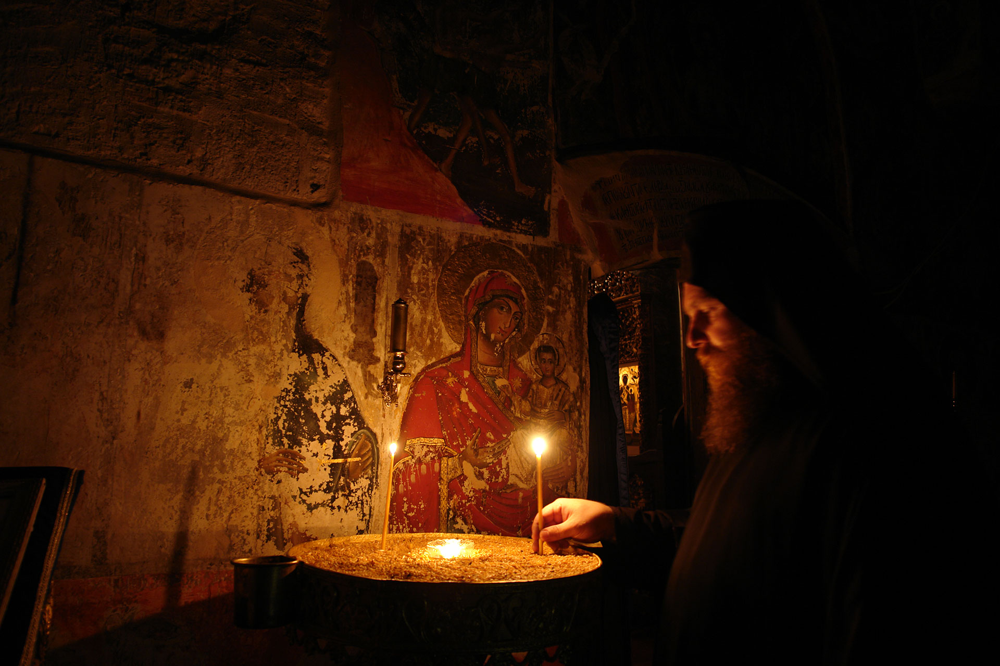

The Mysticism and Spiritual Life of Eastern Orthodoxy
The Role of Icons
One of the most distinctive features of Eastern Orthodoxy is the veneration of icons, religious images that depict Christ, the Virgin Mary, saints, and events from the Bible. Icons are not considered idols, but windows into the divine. They serve as tools for prayer and meditation, helping the faithful to focus on the spiritual world and deepen their relationship with God.
The Mystery of Divine Worship
Eastern Orthodox worship is profoundly mystical and is designed to engage all the senses. The Divine Liturgy is celebrated with incense, chanting, and elaborate rituals that bring the worshippers into the presence of the sacred. The church building itself is designed to symbolize Heaven on Earth, with its high domes, beautiful icons, and sacred space.
The Holy Eucharist
The sacrament of Communion is viewed as the most important aspect of spiritual life. It is believed that through Communion, the faithful partake in the Body and Blood of Christ, participating in the divine life.
Conclusion: Unity in Diversity
Despite the diversity of national churches, languages, and cultures, Eastern Orthodoxy remains united by its common faith and traditions. Its rich history, deep spirituality, and ancient practices continue to inspire millions of people around the world to seek a closer relationship with God and a life of virtue.
More Resources
- Orthodox Intro
- Ancient Faith Ministries
- The Fundamental Teachings of the Orthodox Church
- Orthodox Church Directory